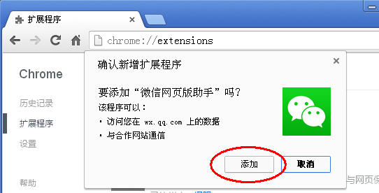
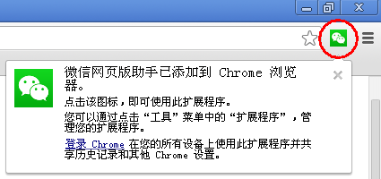

安装“微信网页版助手”
微信网页版对于长时间在电脑上工作的童鞋来说非常方便实用，但是，相对于手机客户端而言，网页版有一个缺陷让人非常不爽：
在一个聊天群里，为了便于互相识别，很多人都设置了“群昵称”，手机客户端可以选择“显示群成员昵称”。
但是网页版却无法看到群成员昵称，只有把鼠标悬停在头像上才能看到昵称，而且也只是该用户的“账号昵称”，并不是“群昵称”。
“微信网页版助手”这个小工具就是用来解决这个问题的。
按照下面介绍的方法安装本工具之后，即可以在聊天对话中显示出用户的“群昵称”。
严格来说，这里所看到的并不是真正的“群昵称”，因为“微信网页版”页面根本就没有从服务器端获取“群昵称”数据，所以，本工具所呈现的只是一个自己设置的“显示名”。
使用者需要自己手工维护一个“账号昵称-显示名”的映射表，显示名设置成什么完全是随意的，当然你可以对照手机客户端查到每个用户自己设置的群昵称。
这是一个 Chrome 浏览器插件，只能在 Chrome 浏览器中使用。
安装过程：
- 下载保存 WxAssist.crx 文件。
- 在 Chrome 浏览器中打开“扩展程序”管理页面 chrome://extensions/
- 把前面下载保存的 WxAssist.crx 文件拖拽到该页面中，并同意安装。

使用：
- 工具安装好之后，地址栏旁边会出现一个按钮，点击可以打开“微信网页版”页面。

- 在群聊窗口里，每个联系人发的消息后面都会跟上相应的昵称和显示名。
- 可以在“扩展程序”管理页面里进入“选项”，设置昵称、显示名。
关于隐私和安全：
- 本程序开放全部源代码，寄放在 GitHub 上：https://github.com/maq128/temp/tree/master/WxAssist
- 下载安装的插件程序包 WxAssist.crx 实际上是一个压缩文件，把扩展名修改为 .zip 之后解压即可以看到全部源代码。
- 为方便使用，本程序源代码中预置了部分微信账号、显示名，如有介意请与本人联系（微信号 maq128）